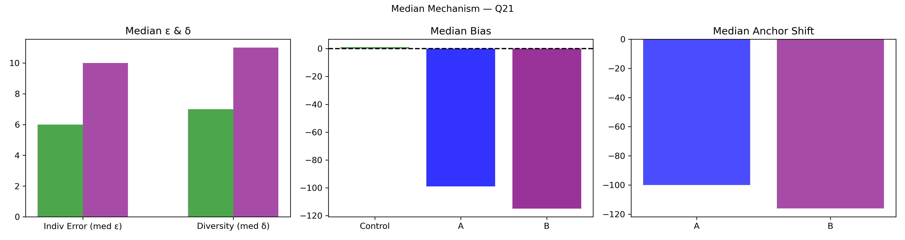

Question Q21: Race among the African wildlife! How many racers will finish this year's Big Five Marathon?
Super Summary
================================================================================
QUESTION Q21: 03_Export_0627_stats_tKyKUkGP0t.csv
Race among the African wildlife! How many racers will finish this year's Big Five Marathon?
Truth = 127.0
N_ctrl = 170 N_ext = 77
================================================================================
[1] COLLECTIVE ERROR (E)
Control Ec: 3.1673 ± 2.7442
CI = [ 0.1295 , 10.3909 ]
Extremized Ex: 1.9735 ± 1.4687
CI = [ 0.1039 , 5.4685 ]
Difference (Ec - Ex) = 1.1938
Percent Change = 37.69%
Bootstrap:
P(Ex < Ec) = 0.6250
→ 62.5% of samples show extremized < control
[2] INDIVIDUAL ERROR (ε)
Control mean ε = 14.6000
Extremized ε = 13.6623
Percent Change = -6.42%
Welch t-test: t = 0.309, p = 0.7576
Cohen's d = 0.032
[3] DIVERSITY (δ)
Control SD = 37.1334
Extremized SD = 18.9757
Percent Change = -48.90%
Levene p = 0.8027
[4] ANCHOR DIAGNOSTICS
Anchor A = 152.0
Anchor B = 101.0
A_effective = False
B_effective = False
[5] EQUATION 6 CHECK
w_L = 0.4093 w_H = 0.3678
Delta = 6.3583
Criterion_L = False Criterion_H = False
Meets both = False
[6] δ–ε–E SCENARIO
Scenario: δ:down, ε:down, E:down
Mechanism Explanation: Calibration: anchors pull predictions inward toward the truth, reducing both individual error and diversity and improving collective accuracy.
================================================================================
FINAL INTERPRETATION (with actual figures)
================================================================================
For Q21, collective error shifted from 3.17 to 1.97 (37.69%). Bootstrap = 62.5%. Individual error changed by -6.42%, diversity changed by -48.90%. Scenario = δ:down, ε:down, E:down. Equation 6 feasibility = False.
================================================================================
Median Mechanism Plot
